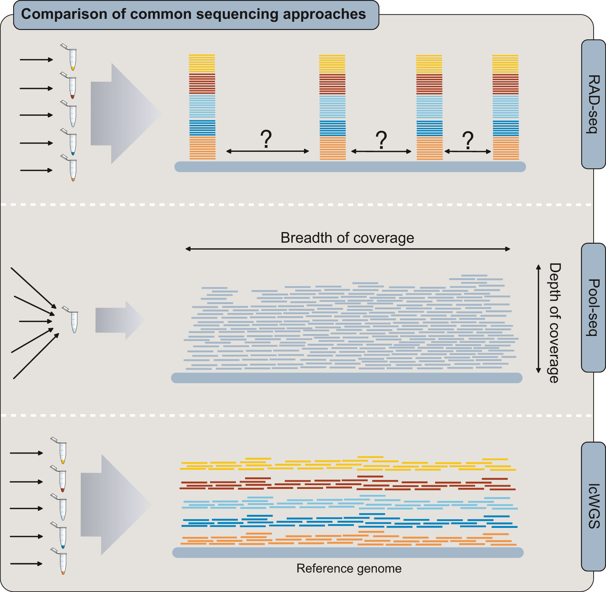

Last rendered: July 2026 — see Major Versions for full environment details.
Choosing a Population Genomics Approach
Initial publication year: 2022
Population Genomic Sequencing Approaches
Deciding on a sequencing approach for a new project can be challenging. Your choice depends primarily on the questions of interest, but also constraints set by funding, existing genomic resources, sample size, genome characteristics and expertise in the research group.
The main categories of population genomic sequencing approaches include…
1) Whole-genome resequencing
Two approaches for whole-genome resequencing are distinguished by their coverage depth. Coverage depth refers to the average number of sequencing reads per region of the genome (distinct from coverage breadth, see (Sims et al. 2014)). With more sequencing reads at a region (higher coverage), errors that arise during sequencing have a smaller impact on accurately identifying variable sites (termed “genotyping”) (Fuentes-Pardo and Ruzzante 2017).
High coverage individual whole-genome resequencing (hcWGS)
Whole-genome resequencing (WGS) is where whole genomes of multiple individuals are sequenced and mapped to an assembled reference genome in order to compare variable sites between individuals or populations. High-coverage (>20x) sequencing is able to find rare variants with high confidence. This approach is considered the ‘gold standard’ for DNA re-sequencing because it includes all variant types (i.e SNVs, indels, structural variants and CNVs) (Sims et al. 2014).
Low coverage individual WGS (lcWGS)
Low coverage whole genome sequencing (lcWGS) is where whole genomes of many individuals are sequenced, but depth of coverage is so low (<5× per site per individual, on average (Nielsen et al. 2011)) that individual genotypes cannot be confidently assigned. Instead of assigning specific (“hard called”) genotypes, lcWGS data requires probabilistic analyses that account for uncertainty about the true genotype and can incorporate uncertainty across all sequenced samples (Korneliussen, Albrechtsen, and Nielsen 2014). This approach is useful in cases where the research questions of interest are targeted at the population-level (i.e. allele frequencies, linkage disequilibrium (LD) patterns, etc) (Lou et al. 2021).
2) Reduced-representation sequencing
As the name suggests, this approach aims to sequence a reduced portion of the genome across multiple individuals at moderate to high coverage for variant discovery and genotyping with high confidence. The genome fragments can be selected at random, or through targeted probe assays. Variations of this type of sequencing approach include…
RADseq/Genotype-by-sequencing
A class of methods involving sequencing a subset of genomic regions randomly distributed throughout the genome, often using restriction enzymes (i.e. restriction site-associated DNA (RADseq)).
Targeted capture methods
Sequence capture methods use a set of probes designed with a-priori knowledge to focus sequencing effort on a set of hundreds to tens of thousands of specific loci. Several capture approaches for non-model species can utilise other sequencing strategies to design probes corresponding to genomic regions (i.e. Whole-exome sequencing (WES), see (Jones and Good 2016) for a review, Expressed Exome Capture Sequencing (eecSeq) (Puritz and Lotterhos 2018)).
3) Pooled individuals (Poolseq)
Sequencing pools of individuals to provide information on genome-wide population allele frequencies (see review in (Futschik and Schlötterer 2010)).
Figure 1 from (Lou et al. 2021) comparing the distribution of sequencing reads mapped to a reference genome.
It should be noted that you don’t need to choose only one approach for all samples! If you are starting a research program on a species without any genomic resources, you may want to start with denovo RADseq to understand basic population structure and genetic diversity, then once a reference genome is assembled move to high/low coverage WGS. In the MarineOmics seminar, Misha Matz recommended choosing one individual to use for genome assembly, doing high coverage WGS on a few other individuals that represent most of the variation in your taxa, and then WGS many other individuals at low coverage. The high coverage individuals can be useful for imputing missing genotypes in the low coverage samples.
The table below briefly summarizes the pros and cons of five sequencing approaches and their appropriateness for answering specific questions. If you are interested in answering multiple questions (i.e. neutral population structure and adaptive variation) then you would often want a method that can do both (i.e. WGS).
| Goals | hcWGS | lcWGS | RADseq | Poolseq | Target.Capture |
|---|---|---|---|---|---|
| pros | provides high quality, high density genotypes; can be used to improve development of a reference genome | provides high density genotypes at a reduced cost | generally cheaper per sample, density of genotypes can be tuned to fit question, does not require a reference | many individuals can be mixed for a low library prep cost, only option for some larval studies | allows consistent capture of loci between batches, good for sequencing targeted regions across many samples |
| cons | most expensive per sample, requires a reference genome assembly, large computational resources | requires a reference, can produce false (+) heterozygotes, sensitive to batch effects, may be inappropriate to use individual SNP calls for some analyses | only 1-5% of genome covered which limits studies on adaptive variation, de novo assembly can result in paralogs without quality control, can be hard to capture the same loci between batches | need higher sequencing depth so it can be more expensive than RAD (but less than other options), no info on individual genotypes (duh), requires a reference, requires some replicates to account for batch effects | expensive to start a new project and requires reference of some kind to design baits (unless using method like eecSeq), only gives info on targeted region so can result in ascertainment bias for some analyses |
| population structure, genetic diversity | great, but cheaper methods work almost as well | good, but limited to popgen analyses based on genotype likelihoods | great, esp. for many samples | good for methods that only use allele frequencies, won't work for individual based methods (eg Admixture) | ascertainment bias is likely to skew results, esp. for measures of genetic diversity |
| demography (mig. rates, pop. size through time) | great if incorporating haplotype-based methods | good, esp. with some high coverage samples to help with imputation | good for methods based on site frequency spectrum (eg moments), but not ideal for methods using extended haplotype or phasing info | active area of method development, but still not common except in cases of multiple temporal samples [@nielsen2020bc] | likely not appropriate due to ascertainment bias |
| signatures of selection, GWAS | great | good | hotly debated, but unless your genome is way too big, WGS is the way to go | good if covering majority of the genome | only works for targeted regions |
| phylogenetic inference | computationally challenging, but good at all divergence levels | good for tree shapes but not branch lengths, good for extracting organelle sequences and cost-effective primers for species and hybrid ID studies | good at shallow to medium divergence levels, but need to play with filtering parameters | would work in certain situations | an improvement over RAD as there will be less missing data among samples |
| genetic crosses/mapping panels | expensive | great | great as it allows for many invididuals | maybe | poor |
| molecular evolution (accurate low-freq alleles required) | best | poor | poor | poor | good if only interested in targeted regions |
Recommended readings
Below we list a number of great review articles and empirical comparison studies that can help when making the decision. This topic was also discussed during the MarineOmics seminars.
Review articles:
- (Matz 2018): great intro to ecological genomics methods in species with few to no prior genomic resources, accessible to those just getting started.
- (Fuentes-Pardo and Ruzzante 2017): a VERY thorough review of the different approaches to generating population genomics data, with non-model species in mind. Some of the content about relative cost and available software is a little dated, but otherwise a very valuable reference.
- (Lou et al. 2021): great recent primer on low coverage WGS and how it compares to RADseq and Poolseq.
Empirical comparisons:
- (Benjelloun et al. 2019): an empirical comparison of high coverage WGS, low coverage WGS, random variants (eg. from RADseq), exome capture, and commercial SNP chip for mammals (genome size=2.6Gb). For neutral genomic diversity, found 5k-10k random variants were enough to accurately estimate, but commercial panels/exome capture had ascertainment bias. To detect selection and accurate estimates of LD, at least 1M variants were required. For the studied species, 5x coverage was just as accurate as 12x coverage. Low coverage WGS (< 5x) should use genotype likelihood methods, however, the rate of false positives for heterozygotes is higher than classic genotyping methods at higher coverage.
- (Dorant et al. 2019): a case study comparing Poolseq vs. reduced representation seq (GBS) vs Rapture (targeted capture of RAD loci) for inferring population structure with weak genetic differentiation. All three detected the same weak pop structure pattern, but Poolseq gave Fst values 3-5x higher than Rapture/GBS.
MarineOmics Guidelines
Presently, our site covers four approaches:
For each approach, we provide guiding principles and tutorials for bioinformatic processing from raw data to genotypes. While we currently don’t discuss library preparation methods in depth, we do include advice on how to organize your sequencing runs in order to improve quality control downstream.
References
Benjelloun, Badr, Frédéric Boyer, Ian Streeter, Wahid Zamani, Stefan Engelen, Adriana Alberti, Florian J Alberto, et al. 2019. “An Evaluation of Sequencing Coverage and Genotyping Strategies to Assess Neutral and Adaptive Diversity.” Mol. Ecol. Resour. 19 (6): 1497–1515. https://doi.org/10.1111/1755-0998.13070.
Dorant, Yann, Laura Benestan, Quentin Rougemont, Eric Normandeau, Brian Boyle, Rémy Rochette, and Louis Bernatchez. 2019. “Comparing Pool-Seq, Rapture, and GBS Genotyping for Inferring Weak Population Structure: The American Lobster (Homarus Americanus) as a Case Study.” Ecol. Evol. 9 (11): 6606–23. https://doi.org/10.1002/ece3.5240.
Fuentes-Pardo, Angela P, and Daniel E Ruzzante. 2017. “Whole-Genome Sequencing Approaches for Conservation Biology: Advantages, Limitations and Practical Recommendations.” Mol. Ecol. 26 (20): 5369–5406. https://doi.org/10.1111/mec.14264.
Futschik, Andreas, and Christian Schlötterer. 2010. “The Next Generation of Molecular Markers from Massively Parallel Sequencing of Pooled DNA Samples.” Genetics 186 (1): 207–18.
Jones, Matthew R, and Jeffrey M Good. 2016. “Targeted Capture in Evolutionary and Ecological Genomics.” Molecular Ecology 25 (1): 185–202.
Korneliussen, Thorfinn Sand, Anders Albrechtsen, and Rasmus Nielsen. 2014. “ANGSD: Analysis of Next Generation Sequencing Data.” BMC Bioinformatics 15 (1): 1–13.
Lou, Runyang Nicolas, Arne Jacobs, Aryn P Wilder, and Nina Overgaard Therkildsen. 2021. “A Beginner’s Guide to Low-Coverage Whole Genome Sequencing for Population Genomics.” Mol. Ecol., July. https://doi.org/10.1111/mec.16077.
Matz, Mikhail V. 2018. “Fantastic Beasts and How to Sequence Them: Ecological Genomics for Obscure Model Organisms.” Trends Genet. 34 (2): 121–32. https://doi.org/10.1016/j.tig.2017.11.002.
Nielsen, Rasmus, Joshua S Paul, Anders Albrechtsen, and Yun S Song. 2011. “Genotype and SNP Calling from Next-Generation Sequencing Data.” Nature Reviews Genetics 12 (6): 443–51.
Puritz, Jonathan B, and Katie E Lotterhos. 2018. “Expressed Exome Capture Sequencing: A Method for Cost-Effective Exome Sequencing for All Organisms.” Molecular Ecology Resources 18 (6): 1209–22.
Sims, David, Ian Sudbery, Nicholas E Ilott, Andreas Heger, and Chris P Ponting. 2014. “Sequencing Depth and Coverage: Key Considerations in Genomic Analyses.” Nature Reviews Genetics 15 (2): 121–32.